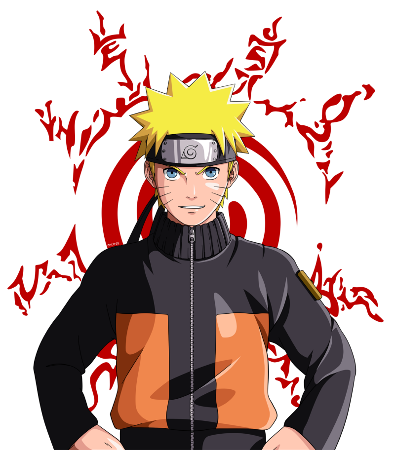

Recomendados
Descubre en nuestra sección de recomendados los animes que no te puedes perder. Te ofrecemos una selección especial de series destacadas, organizadas por géneros y popularidad. Tanto si eres un veterano del anime como si estás empezando, encontrarás recomendaciones que te fascinarán y te mantendrán enganchado.
!100% Recomendados¡
Kimetsu no Yaiba
Si buscas un anime con acción emocionante, una historia cautivadora y una animación espectacular, "Kimetsu no Yaiba" es para ti. Acompaña a Tanjiro en su misión para salvar a su hermana Nezuko y enfrentarse a poderosos demonios. ¡Una serie imperdible que ha encantado a fans en todo el mundo!
Black Clover
Para una aventura épica llena de magia, acción y amistad, no te pierdas "Black Clover". Sigue a Asta, un joven sin poderes mágicos, en su viaje para convertirse en el Rey Mago y proteger su reino. Con emocionantes batallas, un desarrollo de personajes inspirador y un mundo mágico fascinante, "Black Clover" te mantendrá entretenido desde el primer episodio. ¡Una serie imprescindible para cualquier fan del anime!
Naruto

Si buscas una serie icónica llena de acción, emoción y crecimiento personal, "Naruto" es una elección perfecta. Sigue a Naruto Uzumaki, un joven ninja con un espíritu indomable, en su viaje para convertirse en el Hokage y ganarse el respeto de su aldea. Con una historia profunda, personajes entrañables y combates épicos, "Naruto" es un anime que ha dejado una huella imborrable en los corazones de millones de fans. ¡No te lo pierdas!
Dragon Ball Z

Para una dosis de acción épica y aventuras intergalácticas, no hay nada como "Dragon Ball Z". Acompaña a Goku y sus amigos en emocionantes batallas contra poderosos enemigos, mientras protegen la Tierra y exploran nuevos límites de fuerza y poder. Con su legado duradero, personajes carismáticos y momentos icónicos, "Dragon Ball Z" sigue siendo una experiencia inolvidable para todos los amantes del anime y la acción.